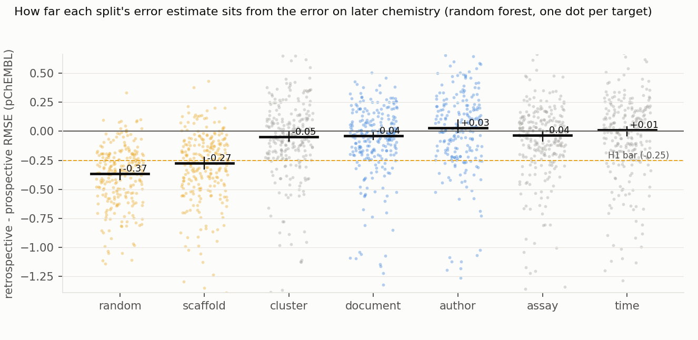
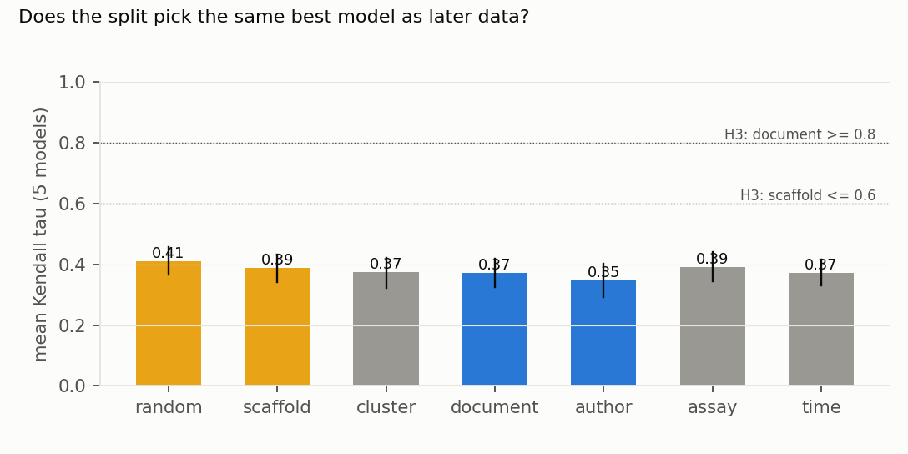
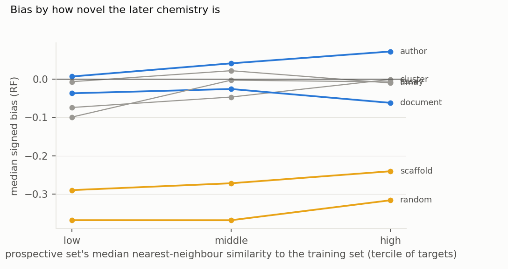

Verdict: H1 Supported; H2 Refuted; H3 Refuted.
- H1 (random and scaffold splits understate prospective error by at least 0.25 log units): Supported.
- The primary model is a random forest on ECFP4. Its median signed bias (retrospective RMSE − prospective RMSE) over 250 targets is −0.37 (95% CI −0.42 to −0.33) for random splits and −0.27 (−0.32 to −0.22) for scaffold splits.
- The median prospective RMSE is 1.07 pChEMBL units. A random split reports 0.68, and a scaffold split 0.78.
- H2 (document- and author-disjoint splits are nearly unbiased: median absolute bias ≤ 0.12): Refuted.
- On average they are close to unbiased: median signed bias −0.04 (document) and +0.03 (author).
- Per target they miss by more than the bar: the median absolute bias is 0.17 (0.14–0.19) for document splits and 0.22 (0.18–0.23) for author splits.
- Cluster, assay and within-release time splits behave the same: signed bias −0.05 to +0.01, absolute bias 0.16–0.19.
- Not just noise (exploratory). Sampling noise in both the prospective RMSE and the retrospective repeats would alone give a median absolute bias of about 0.07 for these splitters, and that is still a lower bound. The observed misses are 2.3–3.3 times that, so most of the per-target miss is real.
- The bar was achievable. A simulation in the confirmation pass shows a true per-target miss of up to about 0.08 would usually pass it, roughly half the observed 0.17–0.22, so the refutation is not an artefact of an impossible bar. The verdict follows the preregistered rule.
- H3 (the split changes which model you pick: Kendall τ ≤ 0.6 for scaffold and ≥ 0.8 for document splits):
Refuted.
- No splitter ranks the five model families the way later data do.
- The mean τ is 0.35–0.41 under every splitter (scaffold 0.39, document 0.37). The paired difference is −0.02 (−0.06 to +0.02).
- What τ ≈ 0.4 reflects (confirmation pass). It mostly reflects every split correctly ranking the MLP last: 81–98% of targets retrospectively, with the MLP worst prospectively in 78%. The other four families sit within a median 0.20 of each other, and no split orders them (τ 0.12–0.18 over those four).
- This bar was demanding. Two single repeats of the same split, within release 33, agree only at τ 0.40–0.55, against 0.30–0.37 for a single repeat against the prospective ranking.
- The pattern holds for every model family and prospective definition.
- It holds for random forest, LightGBM, Tanimoto SVR, kNN and MLP, and for all new activities from any year.
- The MLP is the most overconfident under random splits (−0.56).
- On the lenient set (compounds already in ChEMBL 33 but new to the target), every splitter understates the error. That set is small, though: 2,859 rows over 212 targets, a median of 8 compounds per target, with 81% of targets under 20. Its per-target RMSEs are very noisy.
In plain terms
Chemists train machine-learning models on past experiments to predict how strongly new molecules will bind a drug target. Before trusting a model, they test it by hiding part of the past data and checking predictions against it. How that part is chosen matters. Hide molecules at random, and the test molecules usually have close relatives in the training data. That makes the test too easy.
We checked seven ways of hiding data against what actually happened next. We trained on the 2023 edition of the public ChEMBL database and tested on molecules first published from 2023 on, which appear only in the 2026 edition.
Random and "scaffold" tests made models look much better than they turned out to be. Their typical error on the future molecules was about 1.1 units on a log scale, against 0.7–0.8 in those tests. Hiding whole papers, author groups, assays or the latest compounds gave about the right error on average, but could still be well off for any one target. And no test reliably picked the model that did best on the future data.
What was asked
The lead (cheminformatics-drug-discovery-split-calibration) asked which retrospective splitting strategy best
predicts prospective performance, measured against a real future, not a simulated one.
Prior work: - Sheridan (2013). Time splits give prospective-like estimates; random splits are too optimistic and leave-class-out splits too pessimistic, on in-house data. - Almendra and Falcão (2026). On 14 ChEMBL classification sets, chronological validation shows a gap that random and structure-filtered validation do not reproduce. - Clever Hans in Chemistry (arXiv 2512.20924). Models can learn chemist style, which motivates author-disjoint splits, but those splits were not validated against future data.
H1 is therefore partly confirmatory. What is new is a real prospective truth from later database releases, regression error, provenance splitters (document, author, assay), model ranking, and 250 targets.
How it was done
- Data (ChEMBL 33 and 37 SQLite; ledger L4).
- Activities pass the following filters: pChEMBL present; relation "="; binding assays; confidence 9; single protein; no validity flag; not a potential duplicate.
- Compounds are keyed by standard InChIKey. The median pChEMBL per target and compound is used.
- This leaves 973,255 activities in release 33 and 1,357,779 in release 37 (
results/tables/coverage.json).
- Prospective truth (primary).
- Activities new in release 37 (387,035), from documents dated 2023 or later (108,593), on compounds whose InChIKey is absent from release 33.
- Delta audit (G4). Of 60 sampled new activities, 16 come from 2023+ publications, 43 are older publications
newly curated, and 1 is a re-deposited record. That is why the 2023+ restriction is needed.
- The audit tabulates each document's recorded year (
code/select.py). It shows how much of the delta is old work newly curated, but it cannot detect a 2023+ document that republishes older measurements. - The independent review checked the strict set at the InChIKey skeleton level: 0.86% of primary prospective
rows share a skeleton block with a ChEMBL 33 compound, with no correlation with error (
review/review.md, finding 5).
- The audit tabulates each document's recorded year (
- Targets.
- Eligible targets have ≥ 100 compounds in release 33 and ≥ 50 primary prospective compounds: 295 of them, of which a random 250 are used.
- Training sizes run from 101 to 8,290 compounds (median 744). The median prospective set is 127 compounds.
- Splitters (inside release 33, about 20% test, 5 repeats each):
- random;
- Bemis–Murcko scaffold (L5);
- Butina clusters at Tanimoto distance 0.65 (L6);
- document-disjoint;
- author-disjoint (documents linked by shared author);
- assay-disjoint;
- the latest 20% by document year (1 repeat).
- Models (fixed hyperparameters):
- RF (500 trees) on ECFP4 (L7);
- LightGBM on RDKit descriptors;
- SVR with a Tanimoto kernel;
- Tanimoto-weighted kNN;
- MLP.
- Inference. 2,000 bootstrap resamples over targets.
- Coverage (G2).
- 37,600 of 38,170 fit units ran.
- The 570 others are planned drops. In 425, no group draw gave a 15–25% test set. In 145, the author graph was infeasible (one component holds more than 80% of compounds).
- So author splits cover 212 targets, document and cluster 247, and assay 248.
Results
Bias by splitter (results/figures/F1_bias_by_splitter.png)


| splitter | targets | median signed bias (95% CI) | median absolute bias (95% CI) | median retrospective RMSE |
|---|---|---|---|---|
| random | 250 | −0.37 (−0.42 to −0.33) | 0.37 (0.33–0.42) | 0.68 |
| scaffold | 250 | −0.27 (−0.32 to −0.22) | 0.28 (0.23–0.33) | 0.78 |
| cluster | 247 | −0.05 (−0.08 to −0.00) | 0.18 (0.15–0.22) | 1.01 |
| document | 247 | −0.04 (−0.07 to −0.01) | 0.17 (0.14–0.19) | 1.03 |
| author | 212 | +0.03 (−0.01 to +0.10) | 0.22 (0.18–0.23) | 1.09 |
| assay | 248 | −0.04 (−0.09 to +0.00) | 0.16 (0.13–0.18) | 1.01 |
| time (within release 33) | 250 | +0.01 (−0.04 to +0.04) | 0.19 (0.17–0.22) | 1.05 |
The median prospective RMSE is 1.07.
- Why. The median nearest-neighbour Tanimoto similarity of test compounds to their training set is 0.80 for
random splits, 0.70 for scaffold, 0.50 for document and 0.46 for time splits. For the real prospective compounds it
is 0.43 (from data/fits/).
- Ranking quality is overstated too. The retrospective minus prospective Spearman ρ is +0.45 (random) and +0.34 (scaffold), against +0.06 to +0.11 for
the other splitters.
Model ranking (results/figures/F2_ranking_tau.png)


By how novel the later chemistry is (results/figures/F3_bias_by_similarity.png)


Random and scaffold splits stay optimistic in every tercile of prospective-to-training similarity, from −0.37 (lowest) to −0.32 (highest) for random splits. The other splitters stay within ±0.1.
Bias corrector (secondary)
A gradient-boosting corrector was trained to predict each target's prospective RMSE. Its inputs were the
retrospective RMSEs of all seven splitters plus dataset descriptors: similarity, activity-cliff density, document and
assay entropy, label variance and size. Its median absolute error under 5-fold cross-validation over targets is 0.17
(results/tables/corrector.json).
- That misses the 0.10 bar, and is no better than taking the assay split's estimate as is (0.16) or the document
split's (0.17).
- The most important input was the assay-split RMSE.
Is the per-target miss just noise? (exploratory, results/tables/noise_check.json)
- Prospective noise. The prospective RMSE of a target with n compounds has a normal-theory standard error of about RMSE/√(2n). The median is 0.066 here.
- Retrospective noise (added after review). The retrospective estimate is a mean of five repeats. Its standard error, from the stored per-repeat RMSEs, has a median of 0.068 for document splits, 0.067 for assay and cluster splits and 0.052 for author splits.
- Both together. They would give a median absolute bias of about 0.065–0.069, against the observed 0.16–0.22 for the provenance and cluster splitters, between 2.3 and 3.3 times larger. 46% (author) to 59% (document) of targets fall within two combined standard errors.
- The time splitter has one repeat, so only its prospective term is counted.
- Heavy-tailed errors are still ignored, so this remains a lower bound on noise.
What this does and does not show
- Random and scaffold splits overstate performance on future data, by about a third of a log unit of RMSE and about 0.3–0.45 in Spearman ρ. A scaffold split is only modestly better than random.
- Splits that hold out whole papers, author groups, assays, clusters or the latest compounds are right on average but noisy per target. The typical miss of 0.15–0.22 log units is larger than the H2 bar. This agrees with Sheridan (2013) on time splits. Unlike his leave-class-out case, cluster splits here are not pessimistic.
- Group splits train on slightly more data. Their draws accept a 15–25% test set, so the group splitters hold out
a median 15–17% of compounds against 20% for random and time splits. This flatters them a little in the comparison
H1 rests on, far too little to move H1 (post hoc,
results/tables/posthoc_review.json). - Dropped repeats fall on small targets, infeasible author splits on large ones.
- The 13 targets with dropped repeats have a median of 196 compounds, against 789 for the rest.
- The 29 targets whose author graph was infeasible are larger (median 1,152 against 730; confirmation pass), so author splits miss mostly large targets.
- Correcting the estimate does not help. A corrector that sees every splitter's estimate and dataset descriptors does no better than the best single provenance split.
- Model selection is unreliable whichever split is used. τ ≈ 0.4 means the retrospective ranking of five model families only loosely predicts the prospective one.
- Not shown:
- Random future chemistry. The prospective sets are the series chemists chose to pursue; results are stratified by similarity.
- Tuned models. Hyperparameters were fixed in advance.
- Assays other than binding, and author disambiguation finer than surname plus first initial.
- Within-release time splits as a true future. The time splitter uses document years inside release 33. Its near-zero bias is a retrospective result.
Process and deviations
- Preregistration:
plan.md, committed before any ChEMBL table was read. - Deviations (
deviations.md): D1, after the independent review:- the noise floor gains the retrospective term;
- the H2 and H3 bars are stated against what was achievable;
- model spread, test fractions, lenient-set sizes and the delta audit's scope are stated (post hoc);
- the time splitter's zero-width coverage is noted.
The ChEMBL download needed a resumable fetcher because EBI throttles this host; this changed no analysis choice.
- Gates:
- G1 leakage audit: plan §7;
- G2: results/tables/coverage.json;
- G3: results/plausibility.md;
- G4: the delta audit (a document-year tabulation; see Prospective truth);
- G5: review/overclaim_check.md;
- G6: results/attribution_ledger.csv;
- G7 does not apply (no human labels).
- Independent review: publish with edits (eight findings), edits in D1; confirmation pass: publish with edits,
made in D2.
Reproducing it
code/fetch.py 33, thencode/fetch.py 37(resumable).code/build.py(unpack, extract, filter and coverage), thencode/select.py.code/run.py 16.code/analyse.py, thencode/corrector.py.code/figures.pyandcode/plausibility_check.py.